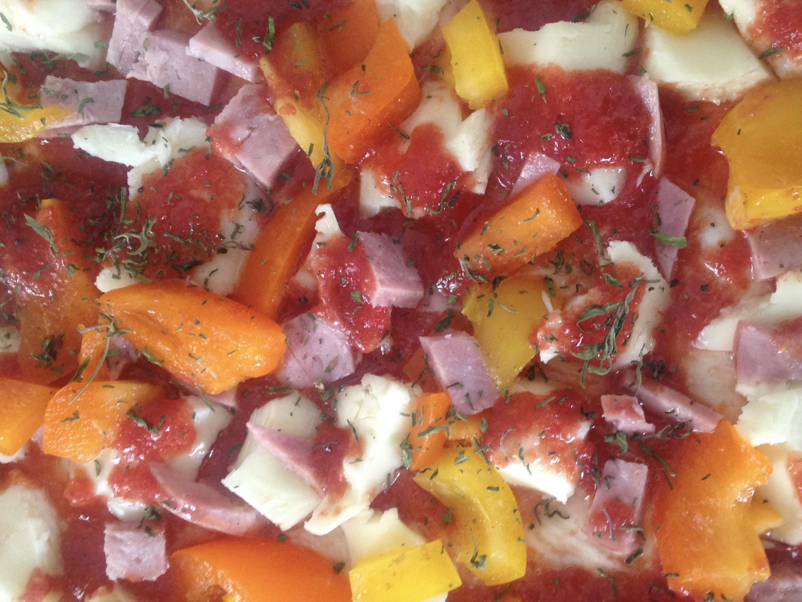

Course Appetizer, merenda
Tempo di preparazione 45 minutes
Cook Time 20 minuti
Tempo totale 1 hour 5 minutes
Ingredients
1 1 busta (7 g) active dry yeast
1 cup (250 ml) di acqua calda
1 1 cucchiaino salt
5 5 cucchiai (75 ml) extra virgin olio oil
Coarsely ground pepe nero
2 tbsp di foglie di rosemary leaves
3 cups (375 to 435 g) di farina
1 1 cipolla grande, chopped
4 roasted tomatoes (8 se sono pomodorini)
16 16 grandi canned flat anchovy fillets
Instructions
- Dissolve the lievito in ¼ cup (60 ml) of the water in a large bowl and mettere da parte per provare about 10 minutes. Stir in the remaining water, the salt, three tablespoons (45 ml) of l'olio, il pepe e il rosmarino.
- Incorporare circa metà the flour, until the mixture forms a pasta morbida that leaves the sides of the lati della ciotola.
- Turn the dough out on una tavola infarinata e impastare about 8 minutes, kneading in farina aggiuntiva until the dough is elastic and no longer sticky.
- Inserire la palla di pasta in a clean oiled bowl.
- Turn the dough to oil it on all sides, cover, and mettere da parte a lievitare fino al raddoppio, 3 to four hours in refrigerator or 1 hour at temperatura ambiente.
- Punch the impasto down.
- While the impasto is rising heat the remaining 2 tablespoons (30 ml) olio in una padella. Add the onion and cook very slowly, stirring, for about 20 minutes, until la cipolla è tenera e ha assunto un color oro intenso. Add 2 tablespoons (30ml) cold water to stop the cooking and togliere dal fuoco.
- Preriscaldare il forno to 450°F (230°C). Line a baking sheet with pergamena.
- Dividere the dough into four portions and forma ciascuno in un giro about 8 inches (18cm) in diameter.
- Make the rounds un po 'più sottile around the edges than in il mezzo.
- Spread the cipolla on each round.
- Coarsely chop the pomodori and scatter them on the cipolla, then top with 4 filetti di acciughe.
- Metti su the baking sheet.
- Place in the oven on il cestello più basso and bake 15 to 20 minutes, until the dough is leggermente dorato.